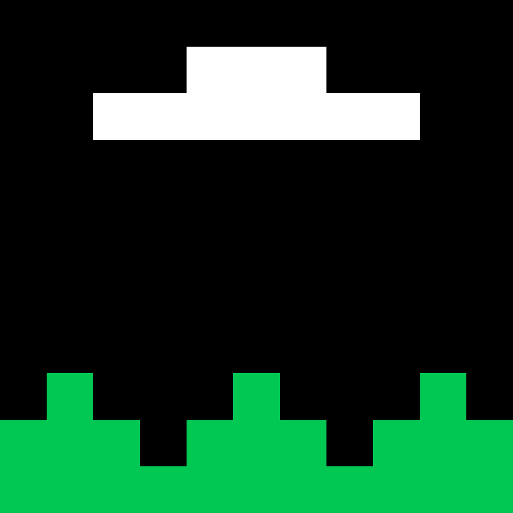

I WANT TO BELIEVE

The poster from his wall in Alien Invasion of Privacy. On a human wall, it’s about aliens. On his, it means he wants to believe someone’s watching. Created for Ethereum’s 11th birthday.

The poster from his wall in Alien Invasion of Privacy. On a human wall, it’s about aliens. On his, it means he wants to believe someone’s watching. Created for Ethereum’s 11th birthday.